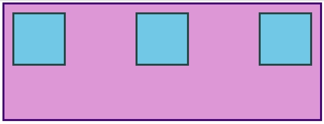

Introducere
Pana acum, tot ceea ce am explorat in Flexbox a folosit regula flex: 1 pe toate elementele flex, ceea ce face ca acestea sa creasca sau sa se micsoreze egal pentru a umple tot spatiul disponibil. Totusi, foarte des, acesta nu este efectul dorit. Flexbox este extrem de util si pentru aranjarea elementelor cu dimensiuni specifice.
Aliniere
Sa analizam un exemplu.
Ar trebui sa poti prezice ce se intampla daca aplici flex: 1 pe .item pana acum. Incearca-l inainte de a merge mai departe!
Adaugarea flex: 1 pe .item face ca fiecare element sa creasca pentru a umple tot spatiul disponibil. Dar ce se intampla daca vrem ca ele sa pastreze aceeasi latime, dar sa se distribuie diferit in interiorul containerului? Putem face acest lucru!
Elimina flex: 1 din .item si adauga justify-content: space-between pe .container. Aceasta modificare ar trebui sa ofere un rezultat similar cu acesta:
justify-content aliniaza elementele de-a lungul axei principale. Exista mai multe valori pe care le poti folosi aici. Vei invata restul acestora in lectiile atribuite, dar pentru moment, incearca sa schimbi valoarea la center, ceea ce ar trebui sa centreze casetele pe axa principala.
Pentru a modifica pozitionarea elementelor pe axa secundara, foloseste align-items. Incearca sa pozitionezi casetele in centrul containerului adaugand align-items: center pe .container. Rezultatul dorit ar trebui sa arate astfel:

Deoarece justify-content si align-items se bazeaza pe axa principala si axa secundara a containerului tau, comportamentul lor se schimba atunci cand modifici flex-direction intr-un container flex. De exemplu, daca schimbi flex-direction la column:
- justify-content va alinea elementele vertical.
- align-items va alinea elementele orizontal.
- justify-content aliniaza orizontal (deoarece axa principala este orizontala).
- align-items aliniaza vertical.
Una dintre cele mai mari surse de confuzie pentru incepatori in Flexbox este schimbarea acestui comportament, asa ca merita sa fii atent la cum functioneaza!
Gap
O caracteristica foarte utila in Flexbox este proprietatea gap. Aplicarea gap pe un container flex adauga un spatiu specificat intre elementele flex, similar cu adaugarea unui margin pe elementele individuale. gap este o proprietate relativ noua, asa ca nu apare in multe resurse inca. Totusi, functioneaza fiabil in toate browserele moderne, asa ca este sigura de utilizat si foarte practica! Adaugarea gap: 8px; la exemplul centrat de mai sus ar trebui sa produca urmatorul rezultat:
Mai ai multe de invatat in lecturile de mai jos, dar in acest punct poti vedea clar cat de incredibil de util este Flexbox. Cu doar proprietatile pe care le-am acoperit pana acum, poti deja sa creezi layout-uri impresionante!
Ia-ti timp pentru a parcurge materialele. Vei gasi recapitularea unor concepte pe care le-am discutat, dar si explicatii mai aprofundate si cateva lucruri noi. Nu te stresa prea tare incercand sa memorezi fiecare detaliu—mai bine codeaza alaturi de exemple si incearca sa asimilezi cat mai bine toate posibilitatile oferite de Flexbox. Vei reveni la aceste resurse cand vei ajunge la exercitiile practice, iar asta este perfect normal. Cu cat folosesti mai mult aceste concepte, cu atat vor deveni mai intuitive pentru tine… si le vei folosi tot timpul.
Distractie placuta!